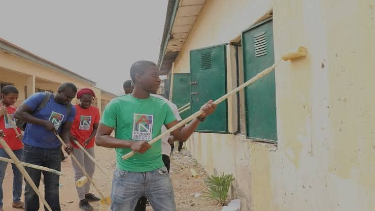

AUN Kilisal 2026 Faale Rewbe Liggal
Maɓe Karfe Walliiɓe nde Rewbe Lokaal
Sarkinjaaje Jahde: Maɓe karfe ilme dalil-ilme ma neɗɗo haa neɗɗo nde kaaggu liggal e faale rewbe liggal.
Hallal Jinaaje
Kilisal AUN 2026 ena kuutora jinaaje aada nde faale rewbe liggal taandugal hello'e duuter ilme dalil-ilme Yola, nde bayyanal'e hitaaɓe mawnde ndee dum'en rewbe liggal caggal e taabal ilme.

Haaloje Faale Rewbe
- Taabal Ilme: Jaŋde loñgu-loñgu nde suuji yimɓe
- Kela Taluude: Nde duuter aladde e taluude ilme
- Caggal Suudu: Maɓe karfe nde galle caggal impe
- Seertina Impe: Jaŋde kolle-koluuji e jappinaje neɗɗo kilisal
Jaggooje Karfe
- Karfe walliiɓe ilme
- Taabal STEM ilme
- Karfe suudu duuter ilme
- Jappinaje neɗɗo kilisal e kaaggu liggal
- Liaasanooje liggal e universiteeri
Jambugguuji Jinaaje
- Duuter Duuter Ilme Dalil:
- Taabal ilme nde kande
- Caggal nde jo universiteeri
- Suudu duuter ilme nde karfe
- Neɓɓe Kilisal AUN:
- Kaaggu liggal haande nde maakkide
- Ndee sarkinaje karfe
- Jaŋde soobaaɗe liggal